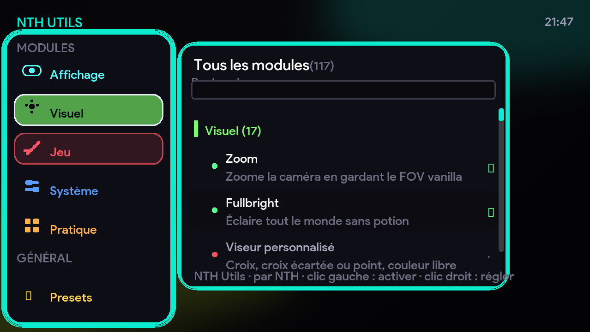
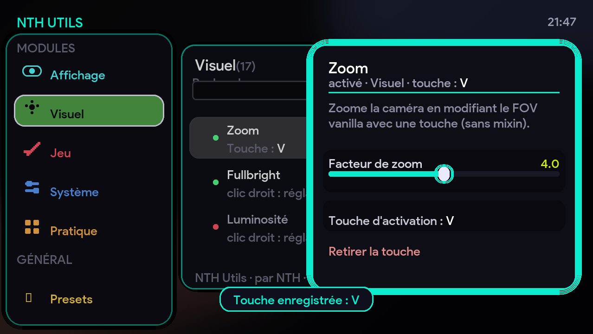
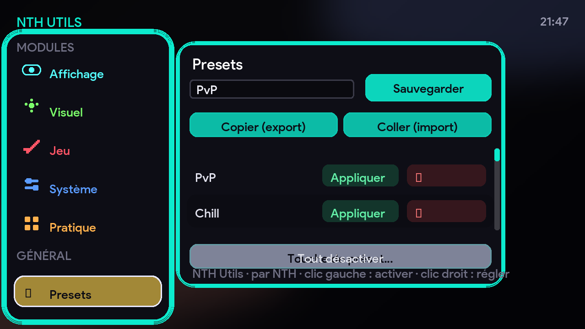
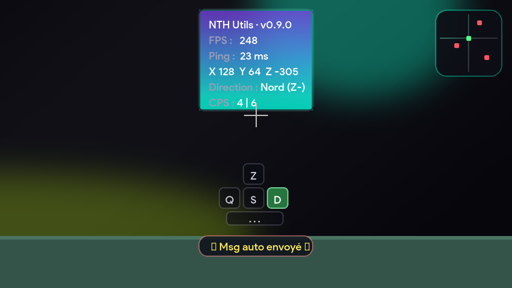
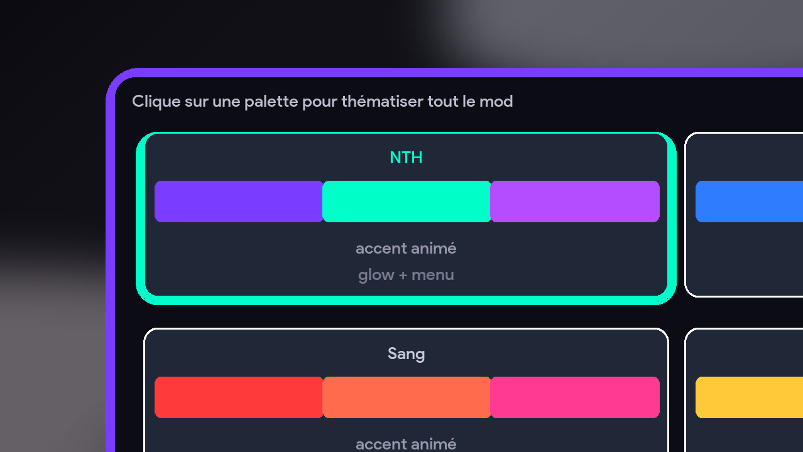

NTH Utils ajoute un menu in-game (touche Shift droit) pour activer et régler plus de 117 modules sur 10 versions de Minecraft : HUD, visuels, infos de jeu, presets… compatible avec ton launcher préféré.
Le menu in-game de NTH Utils, ses presets, ses palettes de thème et le HUD — tout est arrondi, avec glow accent animé.





Choisis ton launcher et ta version de Minecraft : on te donne le bon fichier et les instructions exactes.
Chaque module est activable / désactivable d'un **clic gauche**, et un **clic droit** ouvre ses paramètres complets : sliders, toggles et touche d’activation personnalisable. La liste se défile à la molette avec sa barre de scroll. Nouveautés : Dégradés personnalisables (menu + HUD) et Optimiseur FPS intégré. Tes réglages sont sauvegardés, exportables et importables via des presets.